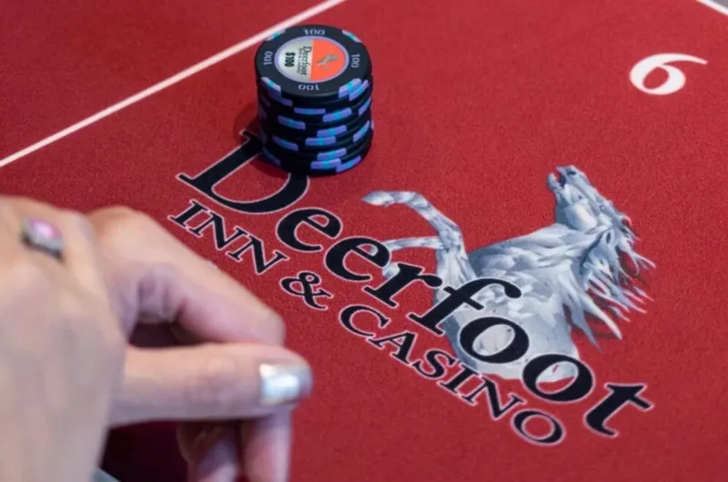

By Alex Drummond, Editor-in-Chief · April 9, 2026 · Fact-checked by Maya Chen
The 2026 Deerfoot Spring Super Stack is running April 7 to 19 at Deerfoot Inn & Casino in Calgary, Alberta. Seventeen events spread across nearly two weeks, with buy-ins from C$180 to C$1,500. It's a Western Canada fixture on the Canadian poker calendar, and this edition continues the steady pattern the series has built over recent years.
Calgary isn't the first city that comes to mind when most people picture Canadian poker. Playground in Montreal and the cluster of venues around Toronto carry most of the national profile. But Deerfoot has been consistent, and consistent eventually counts for something.

A Deep-Stacked Schedule for Western Canada
Seventeen events across 13 days gives this series genuine range. Buy-ins start at C$180, which keeps the barrier accessible for local players and those travelling from elsewhere in Alberta or British Columbia. The top event is the C$1,500 Superstack NLH, which sits at a level that attracts more serious grinders without pricing out the broader field.
The mix is deliberate. Shorter, lower buy-in events run alongside longer, deeper formats, giving players different options depending on schedule and bankroll. Running through April 19 means there's time to play multiple events without the whole series feeling compressed. That pacing matters for a regional festival, where a meaningful portion of the field is travelling specifically for the series and wants to get full value from the trip.
Why the Format Works
A 17-event schedule does something a single main event cannot: it distributes action across the room over an extended period. Local players can pick their spots across two weekends. Travelling regulars can anchor their schedule around the bigger events while filling the gaps with side tournaments. Mid-stakes grinders who might not commit to a festival built around one C$2,000 main event can find multiple entry points that fit their game and their budget.
This isn't a format that relies on one headline tournament to justify the whole series. If the C$1,500 Superstack draws a strong field, that's a win. But even in a quieter year, the rest of the schedule has enough volume to keep the series worth attending. That resilience is part of what keeps it on the calendar.
Calgary's Growing Role in Canadian Poker
Geographic balance in a national poker calendar matters more than it might seem. For years, Canadian live poker has been concentrated in two places: Quebec and Ontario. Playground in Montreal handles the east, and a collection of venues in the Greater Toronto Area handles Ontario. Players outside those regions either travelled east or played online.
Calgary changes that equation, at least for Western Canada. Deerfoot has become one of the more established western anchors on the Canadian live poker map. It draws Alberta regulars, players from British Columbia, and occasional visitors from Saskatchewan and Manitoba who would otherwise have no convenient domestic option for live tournament play at this level.
A stronger national circuit distributes the game more evenly across the country. That's better for players, better for venues, and better for the health of Canadian poker as a whole. Calgary isn't competing with Playground or Fallsview. It's filling a gap those venues were never going to fill on their own.
What This Means for Ontario Players
Ontario players who want to expand their live poker experience beyond Fallsview and the Greater Toronto Area now have a clearer national calendar to work with. Deerfoot in Calgary and Playground in Montreal represent something like the two poles of Canadian live poker outside Ontario itself. Playground is roughly five hours from Toronto and draws a large Ontario contingent for its major series. Deerfoot is in Calgary, which means a flight, but it's on a national schedule that now includes 20 or more festival stops spread across the country.
For players who travel for live events, that variety is meaningful. A schedule built on regional festivals gives you more opportunities to play without always converging on the same two or three venues. Check the live poker Ontario guide for a full picture of what's available locally, and the Ontario poker tournament schedule for a broader view of events on the national and provincial calendar.
The Deerfoot Spring Super Stack won't make international headlines. It doesn't need to. What it does is give Western Canadian players a real festival to organise their spring around, and what it signals is that the Canadian live calendar is adding depth outside the central hubs. That's a slow process, but it's the right direction.
Frequently Asked Questions
What is the Deerfoot Spring Super Stack?
A live poker festival at Deerfoot Inn & Casino in Calgary, featuring 17 events with buy-ins from C$180 to C$1,500. The 2026 edition runs April 7 to April 19.
Where is Deerfoot Inn & Casino?
In Calgary, Alberta, Western Canada.
What buy-ins are available?
C$180 to C$1,500. The top event is the C$1,500 Superstack NLH.
Why does this matter for Ontario players?
It shows the Canadian live poker calendar is growing beyond Central Canada. Ontario players who travel for live events have more options, and a stronger national circuit benefits everyone.